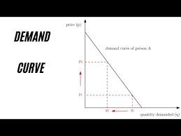
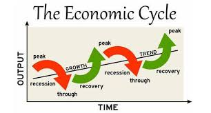

.
ECONOMICS IN A NUTSHELL
Economics is the study of how individuals and societies choose to employ those resources: what goods and services will be produced, how they will be produced, and how they will be distributed among the members of society.
Core Concepts:
-Scarcity : Economics is all about making choices under conditions of limited resources.
We have unlimited wants and needs, but resources to fulfill them are finite. This scarcity forces us to prioritize and make decisions.
-Decision Making : Economics studies how individuals, firms, and governments make choices about what to produce,
how to produce, and for whom to produce, given these constraints.

Two Main Branches:
-Microeconomics : Focuses on individual decision-making units like consumers and firms. It analyzes factors affecting supply and demand,
market structures (competition vs monopoly), and how prices are determined.
-Macroeconomics : Deals with the economy as a whole.
It looks at big-picture issues like inflation, unemployment, economic growth, and international trade

Additional Ideas:
-Economic Systems : There are different ways societies allocate resources. Common systems include market economies (driven by private decisions),
command economies (controlled by the government), and mixed economies (a blend of both).
-Economic Indicators : Economists use various metrics to gauge the health of an economy. Common ones include Gross Domestic Product (GDP),
which measures the total value of goods and services produced, and the Consumer Price Index (CPI), which tracks inflation.